7. Agafar pomes¶
{kind=link}
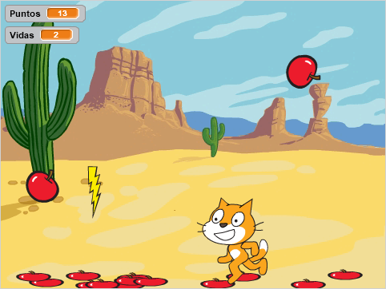
En aquesta pràctica, programarem un joc que consisteix a agafar pomes amb el gat i evitar els rajos que maten. El gat es mourà amb les tecles dreta i esquerra. Quan el gat perd les seves tres vides, el joc s’acabarà.
; BR |
Comencem el | Editor_de_scratch |.
; BR |
Canviarem els antecedents a un ** desert **.
Premeu el botó nou.
; CHANGE-SCENARY |
A continuació, fem clic al tema de la naturalesa ** **.
A continuació, seleccionem el fons ** Desert **.
La pantalla serà la següent.
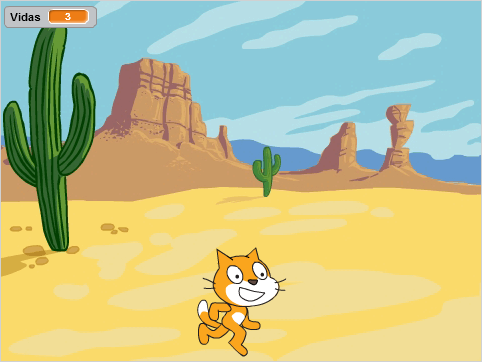
; BR |
Ara hem de fer clic al gat per realitzar el vostre programa. Cal seleccionar la icona del gat.
; Selected Cat |
; BR |
Premant a la lletra ** i ** dins de la icona del gat, podem canviar el vostre nom.
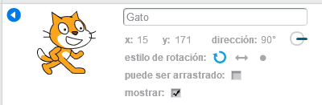
; BR |
A la pestanya Programes CAT crearem una nova funció anomenada ** Home **
Primer fem clic al botó més blocs
; Mas-Blques |
A continuació, feu clic a Creació d’un bloc | Create-Bocate |
A continuació, canviem el nom del nou bloc a ** start **

Finalment, premeu el botó ** ok **
; BR |
Ara crearem la variable ** vides **.
Dins de la pestanya Dades | Dades |,
Premeu Creeu una variable | Create-variable |
Canviem el nom de la variable a ** viu **
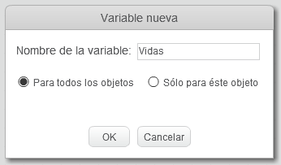
Finalment, premeu el botó ** ok **
Aquesta variable emmagatzemarà les vides que encara té el gat. Quan el seu valor arribi a zero, el gat morirà.
; BR |
Ara escriurem el ** Block Block **.
Primer fem clic al botó més blocs
; Mas-Blques |
A continuació, feu clic a Creació d’un bloc | Create-Bocate |
A continuació, canviem el nom del nou bloc a ** start **
Col·loquem els següents blocs a ** start **.
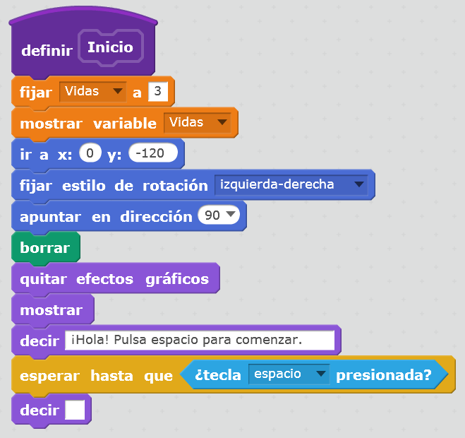
Aquest programa dóna tres vides al gat al principi.
Col·loqueu el gat a la pantalla inferior, amb el mode de rotació esquerra-dreta.
També suprimeix totes les imatges de la pantalla.
Finalment, espereu que continuï la clau d’espai.
; BR |
Ara programarem un bloc que mourà el gat a la dreta i a l’esquerra amb les tecles de direcció. El nou bloc s’anomenarà ** move_gato **
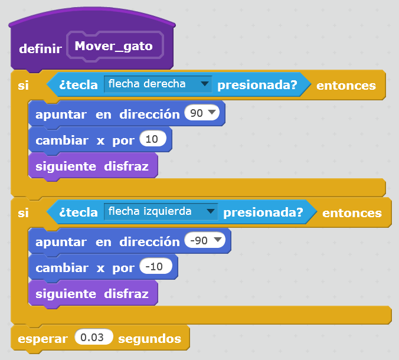
; BR |
Per acabar aquesta secció, realitzarem un petit programa que posarà a prova tot el que hem programat fins ara.
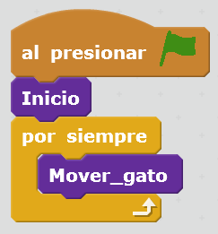
En prémer la bandera verda | Flag-Verde |, el gat primer esperarà que pressionem la barra d'espai, i el gat es desplaçarà cap a l'esquerra i a la dreta prement les tecles ** esquerre i dret **.
{kind=link}
{kind=link}
{kind=link}
Programa de pomes¶
Avís
A partir d’aquest punt, s’han d’afegir totes les instruccions a la pestanya Programes d’objectes ** Apple **.
; BR |
El primer que farem serà afegir un personatge nou, un ** Apple **
Premeu el botó d'objecte nou | Objecte nou |
A continuació, fem clic a les coses de la categoria ** **.
A continuació, seleccionem l'objecte ** Apple **.
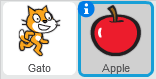
; BR |
Ara crearem una nova variable anomenada ** punts **
Dins de la pestanya Dades | Dades |,
Premeu Creeu una variable | Create-variable |
Canviem el nom de la variable per ** punts **

Finalment, premeu el botó ** ok **
Aquesta variable dirà als punts que s’acumula el personatge del joc.
El gat guanyarà un punt cada vegada que agafeu una poma i perdeu dos punts si la poma cau a terra.
; BR |
Ara afegim un missatge nou anomenat ** start **
Premeu el botó Esdeveniments.
; Esdeveniments |
i passa als programes el bloc "recepció del missatge1 ".
Feu clic a la fletxa, seleccionem ** Missatge nou ... **
; New-Mesate |
Anomenem el nou missatge com a ** Start **.
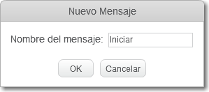
Finalment, premeu el botó ** ok **
Aquest missatge servirà per notificar a les pomes ** ** que poden començar a caure un cop premuda la tecla Space.
També suprimeix els punts per iniciar el joc i els mostra a la pantalla.
; BR |
Ara podem programar les instruccions necessàries perquè les pomes caiguin en rebre el missatge ** start **.
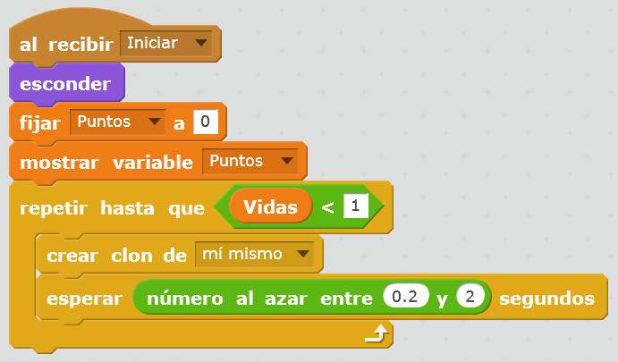
El programa amaga l'objecte de manera que no es vegi a la pantalla, inicieu els punts a zero i creeu còpies de la poma (clons de la poma) de tant en tant aleatòria, mentre que el gat té vides.
; BR |
Anem a crear un altre vestit que representi la poma aixafada a terra a terra.
Primer seleccionem la pestanya Vistumes | Disfresses | de la poma.
A continuació, seleccionem amb el botó dret del ratolí del vestit de poma per doblar.
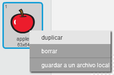
Amb el vestit de recentment creat Apple2, aixafem la imatge.
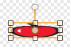
; BR |
En aquesta secció definirem com es comporten els clons de poma. Crearem els programes següents.
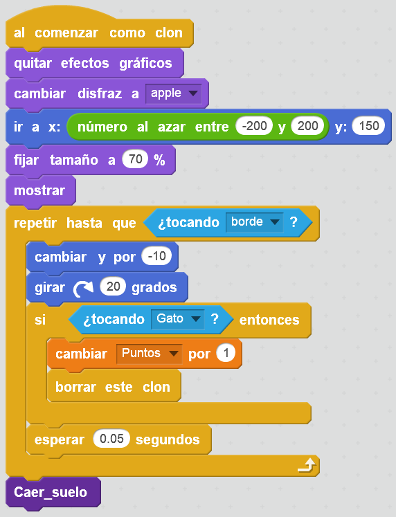
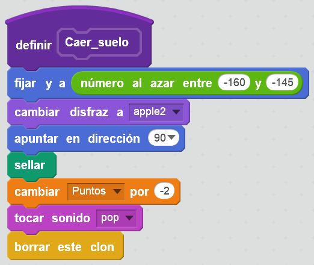
La poma es col·loca a la part superior de la pantalla i cau a poc a poc (canvi i per a -10) fins que toqui el gat o fins que caigui a terra.
Si la poma toca el gat, augmenta els punts i desapareix.
Si la poma toca el terra, aixafarà i sonarà un cop.
El programa s'ha dividit en diverses funcions per simplificar cadascun dels blocs.
; BR |
Ara verificarem que les noves instruccions funcionen. ** Modifiquem el programa CAT ** per afegir el missatge ** inici **
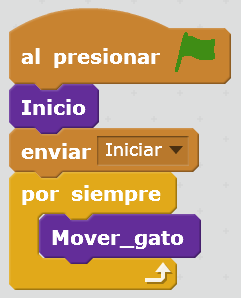
; BR |
En aquest moment, el gat pot jugar per recollir pomes. Hem de moure el gat amb les fletxes esquerre i dret per tocar les pomes abans que caiguin a terra.
{kind=link}
{kind=link}
{kind=link}
{kind=link}
Programa de raigs¶
En aquesta secció programarem que diversos rajos cauen des de dalt i que eliminen vides al gat. D’aquesta manera donem al joc més dificultats i emocions.
Avís
A partir d’aquest punt, s’han d’afegir totes les instruccions a la pestanya Programes d’objectes ** Rayo **.
; BR |
El primer que farem és afegir un personatge nou, un ** ray **.
Premeu el botó d'objecte nou | Objecte nou |
A continuació, fem clic a les coses de la categoria ** **.
A continuació, seleccionem l'objecte ** Lightning **.
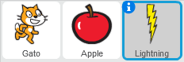
; BR |
Ara programem la caiguda dels raigs des de la part superior de la pantalla. Igual que amb les pomes, els rajos cauran mentre el gat tingui vides.
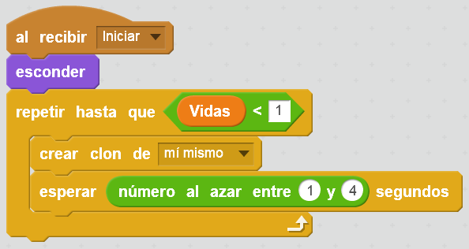
; BR |
Afegirem un nou so al raig, de manera que el gat es queixa quan cau un raig.
Seleccionem la pestanya So | Sons | del raig.
Premeu per seleccionar un so nou a la llibreria | So-Now |.
A la categoria ** animal ** Seleccionem el so ** meow **
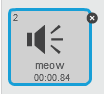
; BR |
Ara hem de crear un programa per a cada clon de raigs.
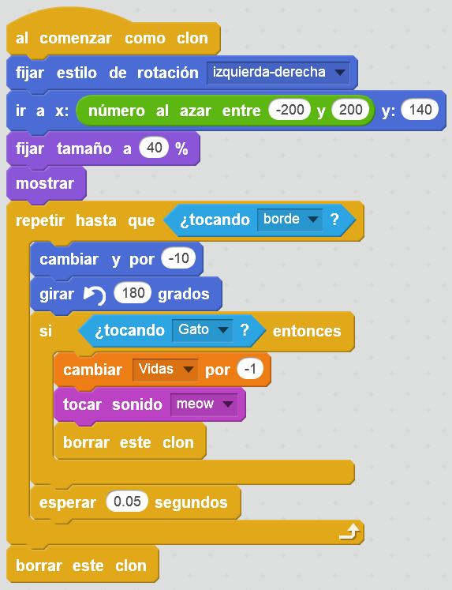
Aquests programes situaran cada raig en una posició aleatòria cada vegada que es crei un clon. A continuació, el llamp caurà (canviarà i per -1) fins que toqui el gat o toqui la vora inferior.
Si el raig toca el gat, es traurà una vida i esborrarà.
Si el raig toca el terra, desapareix.
; BR |
Comprovarem prement la bandera verda | Flag-Verde | Que tot funciona bé.
{kind=link}
{kind=link}
Mort del gat¶
Quan el gat perd tota la vida, el joc s’acaba i deixa de caure pomes i rajos, però el gat continua movent -se. En aquesta secció afegirem les instruccions necessàries perquè el gat sembli mort al final del joc.
Avís
A partir d’aquest punt, s’han d’afegir totes les instruccions a la pestanya Programes d’objectes ** Cat **.
; BR |
Afegim la funció CAT_MUERE, que funciona quan el gat perd tota la vida.
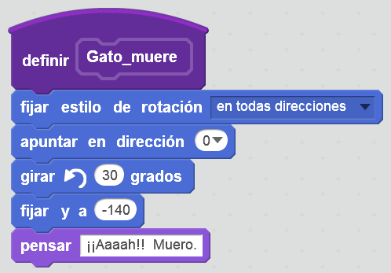
; BR |
I modifiquem el programa del gat.
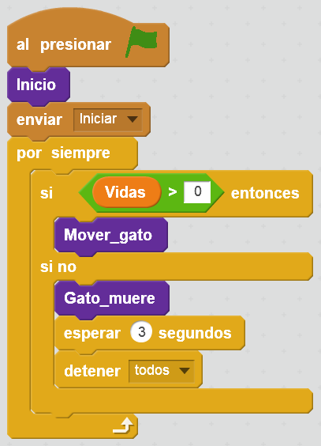
; BR |
En aquest moment, per acabar, afegirem un so de fons al joc.
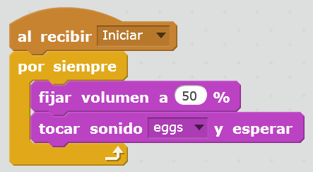
; BR |
Proveu el joc per comprovar que tot funciona correctament.
{kind=link}
{kind=link}
{kind=link}
Exercicis¶
- Modifiqueu el programa de manera que el nombre de raigs augmenti amb el pas del temps, de manera que el joc es faci cada cop més difícil.